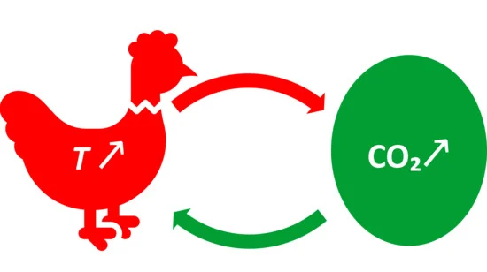
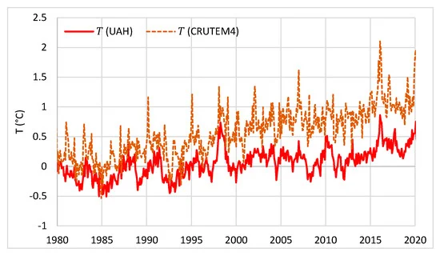
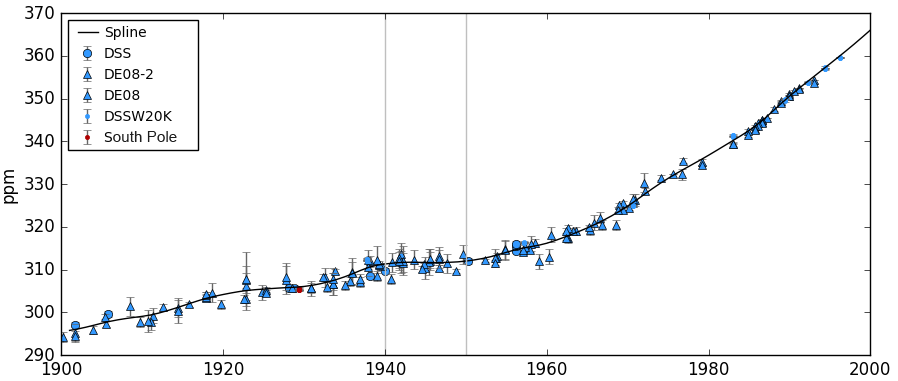

13 CO2 vs Temperature: Causality
13.1 Temperature lags CO2 during deglaciation
Shakun Abstract
The covariation of carbon dioxide (CO 2 ) concentration and temperature in Antarctic ice-core records suggests a close link between CO 2 and climate during the Pleistocene ice ages. The role and relative importance of CO 2 in producing these climate changes remains unclear, however, in part because the ice-core deuterium record reflects local rather than global temperature. Here we construct a record of global surface temperature from 80 proxy records and show that temperature is correlated with and generally lags CO 2 during the last (that is, the most recent) deglaciation. Differences between the respective temperature changes of the Northern Hemisphere and Southern Hemisphere parallel variations in the strength of the Atlantic meridional overturning circulation recorded in marine sediments. These observations, together with transient global climate model simulations, support the conclusion that an antiphased hemispheric temperature response to ocean circulation changes superimposed on globally in-phase warming driven by increasing CO 2 concentrations is an explanation for much of the temperature change at the end of the most recent ice age.
Shakun Memo
Understanding the causes of the Pleistocene ice ages has been a significant question in climate dynamics since they were discovered in the mid-nineteenth century. The identification of orbital frequencies in the marine \({}^{18}O/{}^{16}O\) record, a proxy for global ice volume, in the 1970s demonstrated that glacial cycles are ultimately paced by astronomical forcing. Initial measurements of air bubbles in Antarctic ice cores in the 1980s revealed that greenhouse gas concentrations also increased and decreased over the last glacial cycle, suggesting they too may be part of the explanation. The ice-core record now extends back 800,000 yr and shows that local Antarctic temperature was strongly correlated with and seems to have slightly led changes in \(CO_2\) concentration.
The implication of this relationship for understanding the role of \(CO_2\) in glacial cycles, however, remains unclear. For instance, proxy data have variously been interpreted to suggest that \(CO_2\) was the primary driver of the ice ages, a more modest feedback on warming or, perhaps, largely a consequence rather than cause of past climate change.
Similarly, although climate models generally require greenhouse gases to explain globalization of the ice-age signal, they predict a wide range (one-third to two-thirds) in the contribution of greenhouse gases to ice-age cooling, with additional contributions from ice albedo and other effects
Global temperature reconstructions and transient model simulations spanning the past century and millennium have been essential to the attribution of recent climate change, and a similar strategy would probably improve our understanding of glacial cycle dynamics.
Here we use a network of proxy temperature records that provide broad spatial coverage to show that global temperature closely tracked the increase in \(CO_2\) concentration over the last deglaciation, and that variations in the Atlantic meridional overturning circulation (AMOC) caused a seesawing of heat between the hemispheres, supporting an early hypothesis that identified potentially important roles for these mechanisms. These findings, supported by transient simulations with a coupled ocean–atmosphere general circulation model, can explain the lag of \(CO_2\) behind Antarctic temperature in the ice-core record and are consistent with an important role for \(CO_2\) in driving global climate change over glacial cycles.
The onset of deglaciation, which features about 0.3 \({}^\circ C\) of global warming before the initial increase in \(CO_2\) ,17.5 kyr ago. \(CO_2\) was not the cause of initial warming.
The overall correlation and phasing of global temperature and the overall correlation and phasing of global \(CO_2\) are consistent with \(CO_2\) being an important driver of global warming during the deglaciation, with the centennial- scale lag of temperature behind \(CO_2\) being consistent with the thermal inertia of the climate system owing to ocean heat uptake and ice melting
Although other mechanisms contributed to climate change during the ice ages, climate models suggest that their impacts were regional and thus cannot explain the global extent of temperature changes documented by our stacked record alone.
The lead of Antarctic temperature over global temperature indicates spatial variability in the pattern of deglacial warming.
Southern Hemisphere temperature probably leads \(CO_2\) , consistent with the Antarctic ice-core results, Northern Hemisphere temperature lags \(CO_2\).
Seesawing of heat between the hemispheres explains the contrast between the lead of Antarctic temperature over \(CO_2\) and the lag of global (and Northern Hemisphere) temperature behind \(CO_2\).
Our global temperature stack and transient modelling point to \(CO_2\) as a key mechanism of global warming during the last deglaciation. Furthermore, our results support an interhemispheric seesawing of heat related to AMOC variability and suggest that these internal heat redistributions explain the lead of Antarctic temperature over \(CO_2\) while global temperature was in phase with or slightly lagged \(CO_2\). Lastly, the global proxy database suggests that parts of the northern mid to high latitudes were the first to warm after the LGM, which could have initiated the reduction in the AMOC that may have ultimately caused the increase in \(CO_2\) concentration.
Shakun (2012) Global Warming Preceded by Increasing Carbon Dioxide Concentrations during the Last Deglaciation (pdf) Review in Skeptical Scientist
13.2 Hen-Or-Egg Causality
Koutsoyiannis Abstract
It is common knowledge that increasing \(CO_2\) concentration plays a major role in enhancement of the greenhouse effect and contributes to global warming. The purpose of this study is to complement the conventional and established theory, that increased \(CO_2\) concentration due to human emissions causes an increase in temperature, by considering the reverse causality. Since increased temperature causes an increase in \(CO_2\) concentration, the relationship of atmospheric \(CO_2\) and temperature may qualify as belonging to the category of “hen-or-egg” problems, where it is not always clear which of two interrelated events is the cause and which the effect. We examine the relationship of global temperature and atmospheric carbon dioxide concentration in monthly time steps, covering the time interval 1980–2019 during which reliable instrumental measurements are available. While both causality directions exist, the results of our study support the hypothesis that the dominant direction is T → \(CO_2\) . Changes in \(CO_2\) follow changes in T by about six months on a monthly scale, or about one year on an annual scale. We attempt to interpret this mechanism by involving biochemical reactions as at higher temperatures, soil respiration and, hence, \(CO_2\) emissions, are increasing.
Koutsoyiannis Memo

We develop a stochastic framework, introducing useful notions of time irreversibility and system causality while we discuss the logical and technical complications in identifying causality, which prompt us to seek just necessary, rather than sufficient, causality conditions. In the Results section, we examine the relationship of these two quantities using the modern data, available at the monthly time step. We juxtapose time series of global temperature and atmospheric CO2 concentration from several sources, covering the common time interval 1980–2019. In our methodology, it is the timing rather than the magnitude of changes that is important, being the determinant of causality. While logical, physically based arguments support the “hen-or-egg” hypothesis, indicating that both causality directions exist, interpretation of cross-correlations of time series of global temperature and atmospheric CO2 suggests that the dominant direction is T → CO2, i.e., the change in temperature leads and the change in CO2 concentration follows. We attempt to interpret this latter mechanism by noting the positive feedback loop—higher temperatures increase soil respiration and, hence, CO2 emissions.
While we occasionally use the Granger statistical test, this is not central in our approach. Rather, we place the emphasis on time directionality in the relationship, which we try to identify in the simplest possible manner, i.e., by finding the lag, positive or negative, which maximizes the cross-correlation between the two processes.
Another difference of our study, from most of the earlier ones, is our focus on changes, rather than current states, in the processes we investigate. This puts the technique of process differencing in central place in our analyses. This technique is quite natural and also powerful for studying time directionality. We note that differencing has also been used in a study by Humlum et al., which has several similarities with our study, even though it is not posed in a formal causality context, as well as in the study by Kodra et al. However, differencing has been criticized for potentially eliminating long-run effects and, hence, providing information only on short-run effects
Data
Our investigation of the relationship of temperature with concentration of carbon dioxide in the atmosphere is based on two time series of the former process and four of the latter. Specifically, the temperature data are of two origins, satellite and ground-based. The satellite dataset, developed at the University of Alabama in Huntsville (UAH), infers the temperature, T, of three broad levels of the atmosphere from satellite measurements of the oxygen radiance in the microwave band using advanced (passive) microwave sounding units on NOAA and NASA satellites [47,48]. The data are publicly available on the monthly scale in the forms of time series of “anomalies” (defined as differences from long-term means) for several parts of earth as well as in maps. Here, we use only the global average on monthly scale for the lowest level, referred to as the lower troposphere. The ground-based data series we use is the CRUTEM.4.6.0.0 global T2m land temperature [49]. This originates from a gridded dataset of historical near-surface air temperature anomalies over land. Data are available for each month from January 1850 to the present. The dataset is a collaborative product of the Met Office Hadley Centre and the Climatic Research Unit at the University of East Anglia. We note that both sources of information, UAH and CRUTEM, provide time series over the globe, land, and oceans; here, we deliberately use one source for the globe and one for the land.
The two temperature series used in the study are depicted in Figure.

They are consistent with each other (and correlated, r = 0.8), though the CRUTEM4 series shows a larger increasing trend than the UAH series. The differences can be explained by three reasons: (a) the UAH series includes both land and sea, while the chosen CRUTEM4 series is for land only, in which the increasing trend is substantially higher than in sea; (b) the UAH series refers to some high altitude in the troposphere (see details in Koutsoyiannis [50]), while the CRUTEM4 series refers to the ground level; and (c) the ground-based CRUTEM4 series might be affected by urbanization (many ground stations are located in urban areas). In any case, the difference in the increasing trends is irrelevant for the current study, as the timing, rather than the magnitude, of changs is the determinant of causality.
Methods
Stochastic Framework
A recent study [30] investigated time irreversibility in hydrometeorological processes and developed a theoretical framework in stochastic terms. It also studied necessary conditions for causality, which is tightly linked to time irreversibility. A process that is not time-reversible is called time-asymmetric, time-irreversible, or time-directional. Time asymmetry of a process can be studied more conveniently (or even exclusively in a scalar process) through the differenced process. To study irreversibility in vector processes, we can use second-order moments and, in particular, cross-covariances among the different components of the vector. Time (ir)reversibility could then be characterized by studying the properties of symmetry or asymmetry of \(r_{x̃ ỹ}( ν, η )\) as a function of the time lag η. Time asymmetry is closely related to causality, which presupposes irreversibility. “No causal process (i.e., such that of two consecutive phases, one is always the cause of the other) can be reversible” In probabilistic definitions of causality, time asymmetry is determinant.
Suppes [61] defines causation thus: “An event \(B_{t'}\) [occurring at time t’ ] is a prima facie cause of the event \(A_t\) [occurring at time t] if and only if (i) t 0 < t, ( ii ) P{\(B_{t'}\) } > 0, (iii) P(\(A_t | B_{t'}\) ) > P(\(A_t\) )”. In addition, Granger’s [62] first axiom in defining causality reads, “The past and present may cause the future, but the future cannot”.
Consequently, in simple causal systems, in which the process component \(x_τ\) is the cause of \(y_τ\) (like in the clear case of rainfall and runoff, respectively), it is reasonable to expect \(r_{x̃ỹ}[ ν, η ] ≥ 0\) for any η ≥ 0, while \(r_{x̃ỹ}[ ν, η ] = 0\) for any η = 0. However, in “hen-or-egg” causal systems, this will not be the case, and we reasonably expect \(r_{x̃ỹ}[ ν, η ] != 0\) for any η. Yet, we can define a dominant direction of causality based on the time lag \(η_1\) maximizing cross-correlation. Formally, \(η_1\) is defined for a specified ν as
\(η_1 : = argmax |r_{x̃ỹ} ( ν, η )|\) (over η)
We can thus distinguish the following three cases:
• If \(η_1 = 0\), then there is no dominant direction.
• If \(η_1 > 0\), then the dominant direction is \(x_τ → y_τ\) .
• If \(η_1 < 0\), then the dominant direction is \(y-τ_ → x_τ\) .
It must be stressed that the above conditions are considered as necessary and not sufficient conditions for a causative relationship between the processes x τ and y . Following Koutsoyiannis [30] τ (where additional necessary conditions are discussed), we avoid seeking sufficient conditions, a task that would be too difficult or impossible due to its deep philosophical complications as well as the logical and technical ones.
In essence, the “Granger causality test” studies the improvement of prediction of a process \(y_τ\) by considering the influence of a “causing” process \(x_τ\)
The rejection of the null hypothesis is commonly interpreted in the literature with a statement that \(x_τ\) “Granger-causes” \(y_τ\). This is clearly a misstatement and, in fact, the entire test is based on correlation matrices. Thus, it again reflects correlation rather than causation. The rejection of the null hypothesis signifies improvement of prediction and this does not mean causation.
Cohen [66] suggested replacing the term “Granger causality” with “Granger prediction” after correctly pointing out this:
Results from Granger causality analyses neither establish nor require causality. Granger causality results do not reveal causal interactions, although they can provide evidence in support of a hypothesis about causal interactions.
Some have thought they can approach genuine causes and get rid of the caution “correlation is not causation” by replacing the correlation with other statistics in the mathematical description of causality. For example, Liang [44] uses the concept of information (or entropy) flow (or transfer) between two processes; this method has been called “Liang causality” in the already cited work he co-authors [43]. The usefulness of such endeavours is not questioned, yet their vanity to determine genuine causality is easy to infer: using any quantity related to entropy (equivalently, information), is virtually identical to using correlation. The information flow turns out to be the correlation coefficient multiplied by a constant. In other words, the big philosophical problem of causality cannot be resolved by technical tricks. Thus, using any quantity related to entropy (equivalently, information), is virtually identical to using correlation.
We assert that both causality directions exist, and we are looking for the dominant one under the current climate conditions (those manifest in the datasets we use) instead of trying to make assertions of an exclusive causality direction.
Conclusion
In brief, all above confirm the results of our methodology that the dominant direction of causalityis T → CO2.
Physical Interpretation
The omnipresence of positive lags on both monthly and annual time scales and the confirmation by Granger tests reduce the likelihood that our results are statistical artefacts. Still, our results require physical interpretation which we seek in the natural process of soil respiration. Soil respiration, R s , defined to be the flux of microbially and plant-respired CO 2 , clearly increases with temperature. It is known to have increased in the recent years [74,75]. Observational data of R s (e.g., [76,77]; see also [78]) show that the process intensity increases with temperature. Rate of chemical reactions, metabolic rate, as well as microorganism activity, generally increase with temperature. This has been known for more than 70 years (Pomeroy and Bowlus [79]) and is routinely used in engineering design. The Figure 6.1 of the latest report of the IPCC [75] provides a quantification of the mass balance of the carbon cycle in the atmosphere that is representative of recent years. The soil respiration, assumed to be the sum of respiration (plants) and decay (microbes), is 113.7 Gt C/year (IPCC gives a value of 118.7 including fire, which along with biomass burning, is estimated to be 5 Gt C/year by Green and Byrne [80]). We can expect that sea respiration would also have increased. Moreover, outgassing from the oceans must also have increased as the solubility of CO 2 in water decreases with increasing temperature [14,81]. In addition, photosynthesis must have increased, as in the 21st century the Earth has been greening, mostly due to CO 2 fertilization effects [82] and human land-use management [83]. Specifically, satellite data show a net increase in leaf area of 2.3% per decade [83]. The sums of carbon outflows from the atmosphere (terrestrial and maritime photosynthesis as well as maritime absorption) amount to 203 Gt C/year. The carbon inflows to the atmosphere amount to 207.4 Gt C/year and include natural terrestrial processes (respiration, decay, fire, freshwater outgassing as well as volcanism and weathering), natural maritime processes (respiration) as well as anthropogenic processes. The latter comprise human CO 2 emissions related to fossil fuels and cement production as well as land-use change, and amount to 7.7 and 1.1 Gt C/year, respectively. The change in carbon fluxes due to natural processes is likely to exceed the change due to anthropogenic CO 2 emissions, even though the latter are generally regarded as responsible for the imbalance of carbon in the atmosphere.
The results of the study support the hypothesis that both causality directions exist, with T → CO 2 being the dominant, despite the fact that CO 2 → T prevails in public, as well as in scientific, perception. Indeed, our results show that changes in CO 2 follow changes in T by about six months on a monthly scale, or about one year on an annual scale. The opposite causality direction opens a nurturing interpretation question. We attempted to interpret this mechanism by noting that the increase in soil respiration, reflecting the fact that the intensity of biochemical process increases with temperature, leads to increasing natural CO 2 emission. Thus, the synchrony of rising temperature and CO 2 creates a positive feedback loop.
Koutsoyiannis (2020) Atmospheric Temperature and CO2 : Hen-Or-Egg Causality? (pdf)
*Reviewer comments to Koutsoyannis (Connolly)**
On your proposed mechanism for T→CO2
In Section 6, you briefly postulate some of the mechanisms by which increasing T could cause increasing CO2.
I agree with you that increasing global temperatures should lead to increasing atmospheric CO2 from increased soil respiration. Indeed, in a recent paper - ÓhAiseadha et al. (2020), we briefly pointed out that this leads to the surprising fact that the net night-time soil warming caused by wind farms is probably leading to an increase in biological CO2 emissions which may well be counteracting some (or all) of the reduction in anthropogenic CO2 emissions the wind farms are hoped to cause.
You might find some of the references we cite in Section 4.2.4 of ÓhAiseadha et al. (2020) relevant for your arguments.
However, I would suggest that there are other mechanisms by which global temperatures could alter atmospheric CO2 concentrations – and broadly they typically are of the same sign, i.e., more warming leading to increased atmospheric CO2 concentrations.
For instance, I would also note that the solubility of CO2 in water decreases with increasing temperature. So, it is plausible that increasing temperature could also cause increasing CO2 through outgassing from the oceans. This is something we are considering for a manuscript that we are working on. However, we are still evaluating this hypothesis, as we are realising there are several unresolved issues associated with the transfer of CO2 across the surface ocean/air boundary.
Nonetheless, the transfer of CO2 back and forth between the surface oceans and the atmosphere is an important component of the annual CO2 fluxes. Therefore, changes in average SST may also be contributing to changes in atmospheric CO2.
Also, we still haven’t published this formally, but our current best explanation for the high seasonal variability of the Barrow (and other Arctic CO2 monitoring stations, e.g., Alert, Canada) is that it is probably related to the seasonality of sea ice. That is, when the oceans are covered by sea ice, no gaseous exchange can occur, but once the sea ice melts in the Arctic summer, CO2 can be exchanged. And because the sea surface temperature is relatively cold, the CO2 solubility is relatively high, i.e., CO2 enters the oceans.
If this hypothesis is correct, then it suggests that changes in average sea ice cover from changing global temperatures might also alter atmospheric CO2.
These proposed mechanisms are less well grounded in the literature than the soil respiration mechanism. However, I suggest that you should at least consider the possibility of other mechanisms.
13.2.1 Causal Structure by Information Flow Analysis
Stips Abstract
We use a newly developed technique that is based on the information flow concept to investigate the causal structure between the global radiative forcing and the annual global mean surface temperature anomalies (GMTA) since 1850. Our study unambiguously shows one-way causality between the total Greenhouse Gases and GMTA. Specifically, it is confirmed that the former, especially \(CO_2\) , are the main causal drivers of the recent warming. A significant but smaller information flow comes from aerosol direct and indirect forcing, and on short time periods, volcanic forcings. In contrast the causality contribution from natural forcings (solar irradiance and volcanic forcing) to the long term trend is not significant. The spatial explicit analysis reveals that the anthropogenic forcing fingerprint is significantly regionally varying in both hemispheres. On paleoclimate time scales, however, the cause-effect direction is reversed: temperature changes cause subsequent \(CO_2\) / \(CH_4\) changes.
Stips Memo
In this study, we use a recently developed mathematical method, which is capable of quantitatively evaluating the drive and feedback causal relation between time series, to address the importance of the different forcing components on climate in a quantitative but model independent way. This new method is based on the information flow (IF) concept.
The whole new formalism is derived from first principles, rather than as an empirically defined ansatz, with the property of causality guaranteed in proven theorems. This is in contrast to other causality analyses, say that based on Granger causality or convergent cross mapping (CCM). The resulting formula is concise in form, involving only the common statistics, namely sample covariances. It also allows an explicit discrimination between correlation and causality: causation implies correlation, but not vice versa Causality is measured as the time rate of information flowing from one time series to another.
A nonzero IF, or information transfer as it may appear in the literature, from an event to another logically tells the strength of the causality from the former to the latter, and a vanishing causality must entail a zero flow. Transfer entropy and Granger causality, the two most extensively studied formalisms of IF and causality analysis respectively, turn out to be equivalent up to a factor of 2. In causality analysis, a principle (actually the only quantitatively stated fact) that must be verified is that, when the evolution of a dynamical event (say A) is independent of another (say B), then the causality from B to A is nil. It has long been found that Granger causality and transfer entropy fail to verify this principle in many applications, giving rise to spurious causalities.
Results
We use this technique to analyse the recently measured global mean surface air temperature anomalies (GMTA) and various reconstructed external forcings covering the period from 1850 to 2005 (156 years). To introduce the method we calculate the information flow (IF) in nat (natural unit of information) per unit time [nat/ut] from the 156 years annual time series of global \(CO_2\) concentration to GMTA as 0.348 ± 0.112 nat/ut and − 0.006 ± 0.003 nat/ut in the reverse direction. Obviously, the former is significantly different from zero, while the latter, in comparison to the former, is negligible. This result unambiguously shows a one-way causality in the sense that the recent \(CO_2\) increase is causing the temperature increase, but not the other way around.
Conclusions
Using the IF concept we were able to confirm the inherent one-way causality between human activities and global warming, as during the last 150 years the increasing anthropogenic radiative forcing is driving the increasing global temperature, a result that cannot be inferred from traditional time delayed correlation or ordinary least square regression analysis. Natural forcing (solar forcing and volcanic activities) contributes only marginally to the global temperature dynamics during the last 150 years. Human influence, especially via \(CO_2\) radiative forcing, has been detected to be significant since about the 1960s. This provides an independent statistical confirmation of the results from process based modelling studies.
On very long time scales (800,000 years) the IF is only significant in the direction from air temperature to \(CO_2\) . This supports the idea that the feedback of GHGs to temperature changes seems to be much slower than the fast response of temperature to changes in GHGs.
The spatial explicit analysis strongly indicates that the increasing anthropogenic forcing is causing very differing effects regionally with some regions in the southern hemisphere showing large IF values. Regions of significant IF do coincide with regions having stronger than average recent warming trends.
Stips (2016) On the causal structure between CO2 and global temperature (pdf)
(See also rsts/Causation: Liang)
13.3 The 1940s CO2 Plateau
Bastos Abstract
The high-resolution CO 2 record from Law Dome ice core reveals that atmospheric CO 2 concentration stalled during the 1940s (so-called CO 2 plateau). Since the fossil- fuel emissions did not decrease during the period, this stalling implies the persistence of a strong sink, perhaps sus- tained for as long as a decade or more. Double-deconvolution analyses have attributed this sink to the ocean, conceivably as a response to the very strong El Niño event in 1940– 1942. However, this explanation is questionable, as recent ocean CO 2 data indicate that the range of variability in the ocean sink has been rather modest in recent decades, and El Niño events have generally led to higher growth rates of atmospheric CO 2 due to the offsetting terrestrial response. Here, we use the most up-to-date information on the differ- ent terms of the carbon budget: fossil-fuel emissions, four estimates of land-use change (LUC) emissions, ocean uptake from two different reconstructions, and the terrestrial sink modelled by the TRENDY project to identify the most likely causes of the 1940s plateau. We find that they greatly over- estimate atmospheric CO 2 growth rate during the plateau pe- riod, as well as in the 1960s, in spite of giving a plausible explanation for most of the 20th century carbon budget, es- pecially from 1970 onwards. The mismatch between recon- structions and observations during the CO 2 plateau epoch of 1940–1950 ranges between 0.9 and 2.0 Pg C yr −1 , depend- ing on the LUC dataset considered. This mismatch may be explained by (i) decadal variability in the ocean carbon sink not accounted for in the reconstructions we used, (ii) a further terrestrial sink currently missing in the estimates by land- surface models, or (iii) LUC processes not included in the current datasets. Ocean carbon models from CMIP5 indi- cate that natural variability in the ocean carbon sink could explain an additional 0.5 Pg C yr −1 uptake, but it is unlikely to be higher. The impact of the 1940–1942 El Niño on the observed stabilization of atmospheric CO 2 cannot be con- firmed nor discarded, as TRENDY models do not repro- duce the expected concurrent strong decrease in terrestrial uptake. Nevertheless, this would further increase the mis- match between observed and modelled CO 2 growth rate dur- ing the CO 2 plateau epoch. Tests performed using the OS- CAR (v2.2) model indicate that changes in land use not cor- rectly accounted for during the period (coinciding with dras- tic socioeconomic changes during the Second World War) could contribute to the additional sink required. Thus, the previously proposed ocean hypothesis for the 1940s plateau cannot be confirmed by independent data. Further efforts are required to reduce uncertainty in the different terms of the carbon budget during the first half of the 20th century and to better understand the long-term variability of the ocean and terrestrial CO 2 sinks.
Bastos Memo

Figure: Atmospheric CO 2 concentration in the Law Dome ice core and firn record from Rubino et al. (2013) and respective un- certainties (markers and whiskers) as well as the spline fit applied to the data following Enting et al. (2006), which attenuates by 50 % variations of ca. 23 years. The period corresponding to the plateau is highlighted between vertical grey lines. The blue markers cor- respond to samples from Law Dome and red markers from South Pole; different symbols indicate the different ice cores (big mark- ers) and firn samples (dots).
Persistent El Niño sequences in 1895–1898 and 1911–1916 as well as the 1940s coincided with small decreases in the CO 2 growth rate.
The very strong El Niño event that lasted from 1940 until 1942 (Brönnimann et al., 2004) may have been responsible for reduced upwelling of carbon-rich waters in the Eastern Pacific, causing an abnormal increase of the global ocean sink. However, this hypothesis remains controversial and, moreover, in spite of the high quality of the Law Dome δ 13 C record, the scatter and uncertainty in the data are relatively high and they affect how well it is possible to partition the biospheric and oceanic fluxes. Errors in the δ 13 C data may lead to spurious and highly correlated terres- trial and oceanic fluxes.
Rafelski et al. (2009), using a single deconvolution of the CO 2 record and a simple land-surface model, pointed to an increased terrestrial sink during the 1940s. This sink was re- lated to change in temperature. Single deconvolutions do not use the δ 13 C information and assume time-invariant ocean re- sponse. When terrestrial uptake is used to explain the 1940s plateau they produce a peak in δ 13 C that appears to be incon- sistent with the ice-core δ 13 C measurements, although the differences are not large compared to the measurement un- certainties.
Even if the unusually long 1940–1942 El Niño did induce strong oceanic uptake, it is not clear that it should have led to a decrease in CO 2 growth rate, as El Niño periods in recent decades have usually been associ- ated with a net increase in atmospheric CO 2 growth rate. The occurrence of El Niño leads to reduced outgassing of CO 2 in the tropical Pacific due to the slow-down of vertical upwelling of carbon and nutrient-rich subsurface waters, driven by weaker trade winds.
However, the magnitude of the El Niño/Southern Oscillation (ENSO) impact on oceanic uptake differs significantly between studies, with approaches based on \(δ^{13}\)C analysis pointing to anomalies of 1.5–2.5 Pg C yr −1 (Keeling et al., 1995; Joos et al., 1999; Trudinger et al., 2002a), while atmospheric CO 2 -based meth- ods point to anomalies of only 0.1–0.5 Pg C yr −1.
Furthermore, the enhancement of the global ocean sink during an El Niño event is usually offset by a much larger terrestrial CO 2 release due to the response of land ecosystems to widespread drought conditions in the tropics and increased fire emissions.
Here, we evaluate whether it is possible to reproduce the stabilization in atmospheric CO 2 during the 1940s using model-based records of sources and sinks for the 20th cen- tury and identify possible mechanisms to explain the plateau. We first compare the atmospheric CO 2 growth rate recon- structed using these datasets with the ice-core record to test their ability to capture the plateau. Additionally, we evalu- ate whether the ocean response to the 1940–1942 El Niño may explain the atmospheric CO 2 stabilization. Finally, we analyse the response of the land sink to this event using land-surface process models and, given that land-use data are highly uncertain, test the possible contribution of LUC to ex- plain the additional sink required to match observations.
Bastos Conclusion
Although the oceans are likely to have contributed, they cannot by themselves provide the complete explanation of the 1940s plateau. A strong terres- trial sink is also required to match the observed stalling in atmospheric CO 2 during the period.
In the case of the terrestrial sink, other processes currently not included in the models or in the LUC reconstructions may have contributed to the plateau. The ef- fects of fire occurrence, changes in nutrient availability and the devastating socioeconomic consequences of the Second World War are examples of processes currently not well rep- resented in the models.